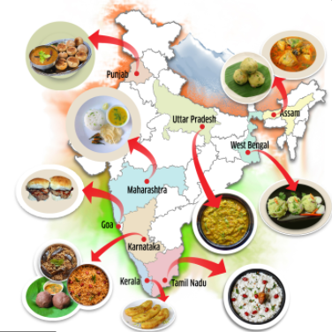
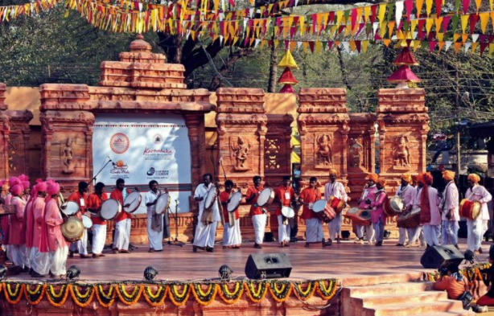

INDIAN Culture
Information
First of all, Indian origin religions are Hinduism, Buddhism, Jainism, and Sikhism. All of these religions are based on karma and dharma. Furthermore, these four are called as Indian religions. Indian religions are a major category of world religions along with Abrahamic religions. Also, many foreign religions are present in India as well. These foreign religions include Abrahamic religions. The Abrahamic religions in India certainly are Judaism, Christianity, and Islam. Besides Abrahamic religions, Zoroastrianism and Bahá’í Faith are the other foreign religions which exist in India. Consequently, the presence of so many diverse religions has given rise to tolerance and secularism in Indian culture. The Joint family system is the prevailing system of Indian culture. Most noteworthy, the family members consist of parents, children, children’s spouses, and offspring. All of these family members live together. Furthermore, the eldest male member is the head of the family. Arranged marriages are the norm in Indian culture. Probably most Indians have their marriages planned by their parents. In almost all Indian marriages, the bride’s family gives dowry to bridegroom. Weddings are certainly festive occasions in Indian culture. There is involvement of striking decorations, clothing, music, dance, rituals in Indian weddings. Most noteworthy, the divorce rates in India are very low. India celebrates a huge number of festivals. These festivals are very diverse due to multi-religious and multi-cultural Indian society. Indians greatly value festive occasions. Above all, the whole country joins in the celebrations irrespective of the differences. Traditional Indian food, arts, music, sports, clothing, and architecture vary significantly across different regions. These components are influenced by various factors. Above all, these factors are geography, climate, culture, and rural/urban setting.
Perceptions of Indian Culture
Indian culture has been an inspiration to many writers. India is certainly a symbol of unity around the world. Indian culture is certainly very complex. Furthermore, the conception of Indian identity poses certain difficulties. However, despite this, a typical Indian culture does exist. The creation of this typical Indian culture results from some internal forces. Above all, these forces are a robust Constitution, universal adult franchise, secular policy, flexible federal structure, etc. Indian culture is characterized by a strict social hierarchy. Furthermore, Indian children are taught their roles and place in society from an early age. Probably, many Indians believe that gods and spirits have a role in determining their life. Earlier, traditional Hindus were divided into polluting and non-polluting occupations. Now, this difference is declining. Indian culture is certainly very diverse. Also, Indian children learn and assimilate in the differences. In recent decades, huge changes have taken place in Indian culture. Above all, these changes are female empowerment, westernization, a decline of superstition, higher literacy, improved education, etc. To sum it up, the culture of India is one of the oldest cultures in the World. Above all, many Indians till stick to the traditional Indian culture in spite of rapid westernization. Indians have demonstrated strong unity irrespective of the diversity among them. Unity in Diversity is the ultimate mantra of Indian culture.